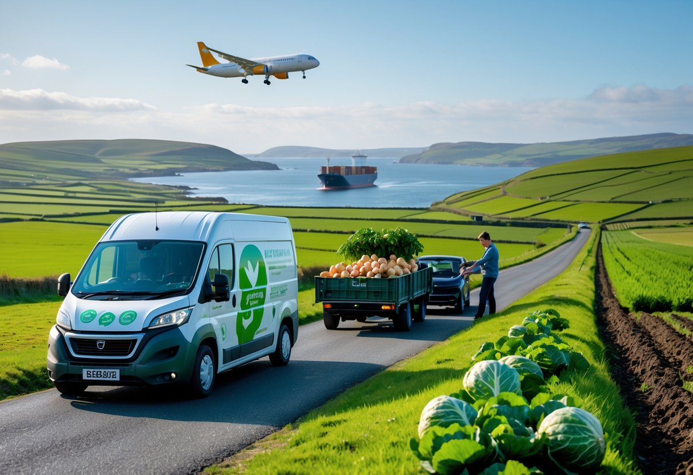

Sustainable food in Ireland focuses on developing food systems that protect the environment while preserving the country's strong farming traditions. It aims to balance environmental responsibility with Ireland’s agricultural heritage by encouraging sustainable farming methods and responsible food choices. This approach helps reduce environmental impact while maintaining the quality and authenticityof Irish food production.
Ireland, with its lush green landscapes and rich agricultural history, has been embracing sustainable food practices for decades. As concerns about climate change, biodiversity loss, and food security continue to grow globally, the focus on sustainable agriculture has become increasingly significant in Ireland.
Innovative and sustainable farming techniques are helping to transform Ireland’s agricultural sector. From crop rotation to regenerative agriculture, Irish farmers are increasingly adopting methods that protect the environment while ensuring the viability of their farms for future generations.
Ireland’s growing focus on sustainability has led to the revival and expansion of local food systems, which are playing a crucial role in reducing the environmental impact of food production. Ireland’s farm-to-table movement and local food markets are promoting sustainability, reducing food miles, and revitalizing rural communities.
Food waste is a major issue worldwide, with significant environmental, social, and economic impacts. In Ireland, the growing focus on sustainability has led to a concerted effort to reduce food waste at all levels—from farms to households. Ireland is addressing food waste through innovative initiatives, policy changes, and grassroots movements that aim to create a more sustainable and equitable food system.
